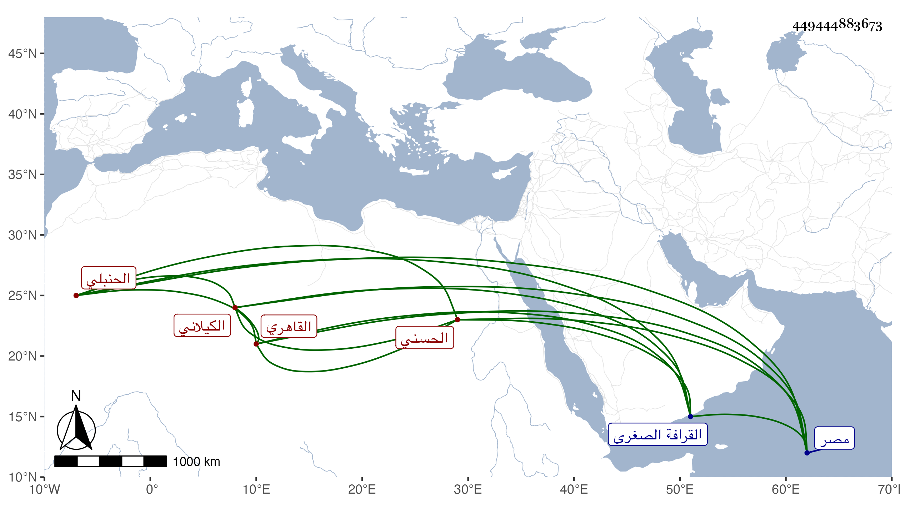

0902Sakhawi.DawLamic.ITO20230111-ara1.EIS1600.449444883673
Biography ID: 449444883673
1032
علي بن محمد بن عبد القادر بن علي بن محمد الأكحل بن شرشيق بن محمد بن عبد العزيز بن القطب المحيوي أبي محمد عبد القادر بن أبي صالح عبد الله نور الدين الحسني الكيلاني الأصل القاهري الحنبلي والد عبد القادر الماضي وشيخ القادرية لبس الخرقة القادرية من آبائه وألبسها جماعة منهم صاحبنا أبو إسحق إبراهيم القادري وقال لي أنه كان عين القادرية بالديار المصرية حسن الخلق والخلق ذا هيبة ووقار وسكينة وحلم . مات في صفر سنة ثلاث وخمسين ودفن بمحل سكنه بالتربة المعروفة بعدي بن مسافر من القرافة الصغرى رحمه الله وإيانا .
